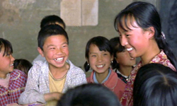
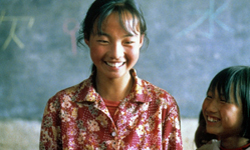
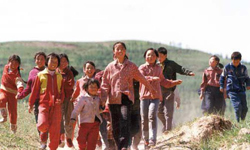
Despite some controversy from the Cannes Film Festival, which eventually led Zhang to withdraw both of his films (including The Road Home) from the competition, Not One Less became another international success, netting four awards from the Venice Film Festival (including the Golden Lion). The story is adapted from Shi Xiangsheng’s 1997 story "A Sun in the Sky" and revolves around 13-year-old Wei Minzhi, who arrives in Shiquan village to substitute for the only teacher there, Gao, who is about to take a month’s leave to take care of his ill mother. As the phenomenon of children leaving school to go to work in factories has become a major issue for the village, Gao promises Wei to give her 10 Yuan if no student has abandoned school by his return. When one of the students leaves, Wei tries to bring her back, and is willing to go to extremes to accomplish that.
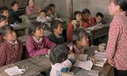
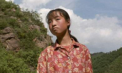
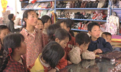
Zhang directs a tender and very moving film that focuses on presenting the faults of the Chinese educational system and the benefits of patience and persistence. This time, his visual style is more realistic, focusing on the frugal and simplistic environment. The dialogues are austere, as his protagonists are children without previous acting experience, but through these tactics he manages to perfectly captivate the reality of the circumstances in the country, as he highlights the fact that the individual is almost ignored in front of the common good.
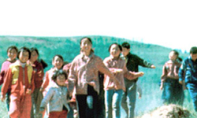
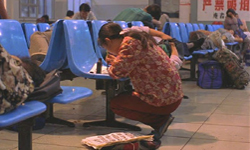
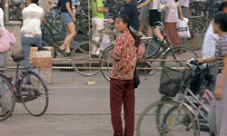
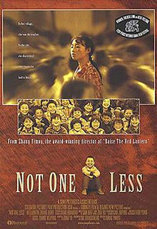
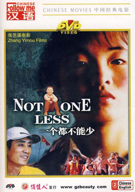
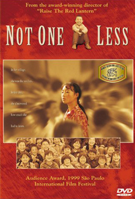
While most of Zhang's early films had been historical epics, Not One Less focussed on contemporary China. The film's main theme involves the difficulties faced in providing rural education in China. When Wei Minzhi arrives in Shuiquan village, the teacher Gao has not been paid in six months and the school building is in disrepair, and chalk is in such short supply that Gao gives Wei specific instructions limiting how large her written characters should be. Wei sleeps in the school building, sharing a bed with several female students. The version of the film released overseas ends with a series of title cards in English, the last of which reads, "Each year, poverty forces one million children in China to leave school. Through the help of donations, about 15% of these children return to school."
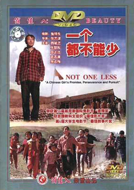
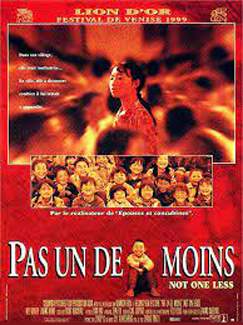
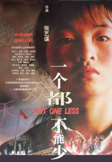